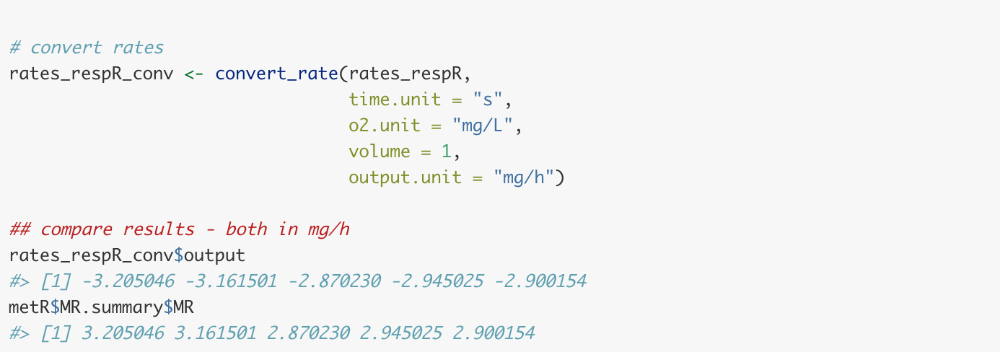
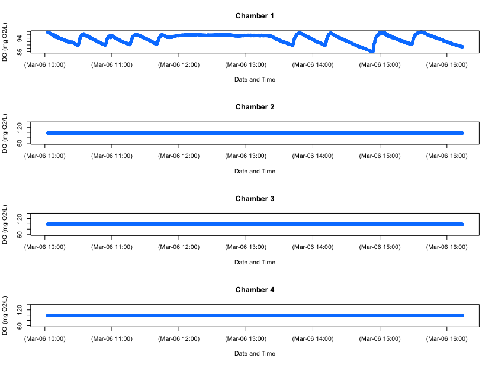
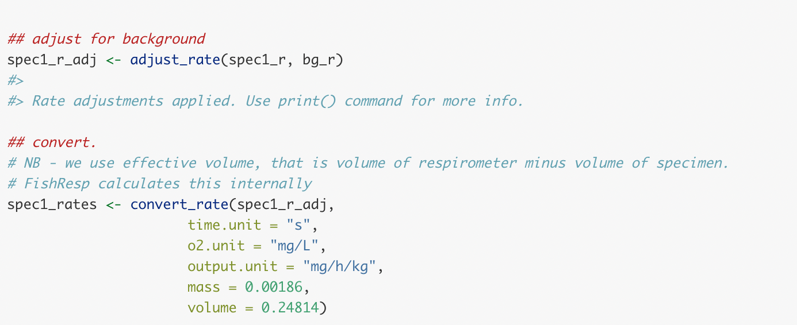

vignettes/archive/packages_comp.Rmd
packages_comp.RmdThis page has been archived and will not be updated. This is
because it was submitted as part of the publication of
respR in Methods in Ecology and Evolution, and has been
retained unchanged for reference. Any results and code outputs shown are
from respR v1.1 code. Subsequent updates to
respR should produce the same or very similar results.
The FishResp and respirometry packages
have also been updated regularly since this was written, so the
following may be out of date.
We have designed respR to be able to explore, process
and analyse any and all aquatic respirometry data, independent of the
system or hardware used to collect it. In fact because of the unitless
nature of the majority of functions in the package, other respirometry
data, or indeed other time series data examining other variables can be
analysed in respR.
There are only a couple of other R packages that are
focused towards respirometry data analysis; rMR,
and FishResp (there is one other, respirometry,
but it is not focussed on processing data). These packages have quite
specific focuses; both rMR and FishResp are
centered around processing intermittent-flow, swim tunnel respirometry
data, in particular from Loligo Systems equipment. Neither has the
universal focus of respR, and while it is sometimes
possible to process other respirometry data using these packages it is
far from straightforward. However, they are excellent packages within
their own focuses and we would encourage users to explore them and how
they work; they may contain functionality that suits your particular
analyses or workflows better than respR.
Neither of these packages however are particularly analytical in
nature; they lack any functionality similar to the
auto_rate() function in respR, which allows
statistically robust, rapid, objective identification of linear segments
in respirometry data. Only one package to our knowledge has a similar
functionality; LoLinR also seeks to
identify linear regions in time-series data, although with no particular
focus on respirometry. We compare the performance of
auto_rate() and LoLinR here.
The rMR and FishResp packages instead rely
solely on manual selection of data regions in respirometry data from
which to extract oxygen uptake rates. respR also has this
functionality as an option, and in this vignette we briefly compare the
outputs of these packages with respR, and other overlapping
functionality.
respR and respirometry
The respirometry
package by Matthew Birk has several useful utility functions for
planning and conducting respirometry experiments. However, as the
documentation states “Tools focus on helping the researcher setup and
conduct experiments. Analysis of the resulting data is not a focus”.
Therefore, this package has little in common with
respR.
The only real functionality overlap with respR is the
conversion function conv_o2(), similar to the
convert_DO() function in respR. Both support
the same units, and because both functions rely on the unit standards
package marelac they give identical or very similar
results. Minor differences are probably dues to the precision with which
variables are handled internally:
respR has a couple of minor advantages; the
respR output is more informative, clearly stating the input
and output units; and a “fuzzy” string matching algorithm is used to
automatically recognise variations in base units, allowing natural,
intuitive input, e.g."ml/s", "mL/sec",
"milliliter/s", and "millilitre/second" are
all equally identified as mL/s.
Overall however, in this small overlap in functionality the packages essentially perform identically.
respR and rMR
The rMR package by Tyler L. Moulton focuses specifically on analysis of data from Loligo Systems hardware (i.e. Witrox probes), and generally on intermittent-flow, fish respirometry. We should note that as of writing (Sep 2018) this package has not been updated in nearly 2 years.
There are several areas of functionality where rMR and
respR overlap:
rMR allows importing of raw Witrox data files.
respR also has this functionality in the
import_data function, which as well as Witrox, supports
several other systems. Here is typical code from each to do this. The
example file and import code (slightly adapted) are taken from the
rMR Github repo and README
file found there.
These both appear to perform well, on this file at least. The
resulting data frames are similar, containing all the relevant data,
although respR adds a numeric time column,
which we find is easier to use in further analyses.
However, in our testing we found that while the rMR
import function worked with this example, and a few other files we
tried, many files we were unable to import using rMR for
reasons we were unable to diagnose. Likely, some of the inputs were not
correctly set, but error messages and documentation were of little help
in solving these problems. This would likely be a significant barrier to
entry for novice R users, and even those more advanced. Clearly the
respR import function is easier to use; it requires only a
single input. It relies on pattern matching to recognise the system the
file comes from, and other data such as the time-date format. The
get.witrox.data function has however an advantage, in that
you can specify the columns to be imported.
While it is likely the respR import_data()
function may fail on occasion, and more testing is needed, it appears to
perform better for Witrox files, as well as supporting other systems. As
always, we encourage users to send us raw data files (from
all systems) to test, particularly ones they have problems with.
As with respR and respirometry,
rMR also has an O2 unit conversion function
DO.unit.convert. Briefly, this function appears to perform
correctly, though only has support for a three units (mg/L, partial
pressure, or percent O2), compared to around 16 in
respR.
rMR implements a PCrit calculation based on the
‘broken-stick’ methods of Yeager and Ultsch (1989). See the
PCrit vignette (Pcrit
analysis) for comparison and further discussion of this.
MR.loops is the workhorse function of rMR
that fits linear regressions to respirometry data and uses the resulting
slopes to calculate oxygen uptake rates. This function relies on
manually specifying one or more regions over which to fit regressions.
respR also allows this in the calc_rate()
function, so here we will compare the results of each on the same data.
Again, we use data included in rMR and code adapted from
the documentation.

As we can see the results are identical (in respR we
chose to express rates as negatives because they represent a negative
slope and depletion of O2). This is exactly what we would expect with
the same inputs and using the same data regions because both functions
are using the same underlying R code to fit the regressions.
Note, that as with respR, rMR also allows a
constant background correction to be made to rates. In the interests of
space, we have not shown this.
respR over rMR
While we are obviously somewhat biased, we see clear benefits of
using respR over rMR. These include, but are
not limited to -
Imports multiple data types, as well as general R data
structures (data frames, tibbles, data tables, etc.)
While use of other data types in rMR is possible, it is not
intuitive, and time data must be in a specific, complex format. It does
not allow the use of simple numeric time-elapsed values. Moreover, we
entirely used the rMR data and examples in the above
comparisons, because in our testing we had many problems importing our
own data to rMR. We could not resolve many of these errors.
We suspect the reliance on complex date-time formats and requiring the
user to specify the precise structure of these was the cause of many of
these problems.
Allows statistically robust identification of linear
regions (auto_rate), rather than solely manual
selection
Allows specifying data regions in several ways (by O2 range, time, or row)
Insisting on use of numeric time elapsed, rather than
POSIX formatted time-data (e.g. “2015-07-03 06:15:00 GMT”) is a clear
usability advantage and reduces error.respR has a function for formatting POSIX data to numeric
time-elapsed, after which the user need not concern themselves with
date-time formats. Date-time and POSIX data are notoriously difficult to
work with and error prone, and we have designed respR to
avoid these when at all possible.
Functions have minimal and intuitive inputs while maintaining full functionality, again reducing potential for error
Better visualisations of the data regions in full context of the dataset
respR and FishResp
The FishResp package has recently come out of beta with the release of version 1.0. A guide to usage of the package has also now been published in Conservation Physiology.
As with rMR, FishResp is focussed on
processing data from intermittent-flow, swim tunnel experiments with
many equally-spaced replicates, particularly from Loligo Systems
equipment (although others are supported). As well as an R
package, it has a GUI version for
Mac, Windows and Linux. It is fully-featured, though highly specific
towards this branch of respirometry.
It has functions for exploring and pre-processing data, but it is
important to note the package only accepts input from some data sources.
We provide here some comparison with overlaps with respR
functionality where we have been able to use the same data.
FishResp allows importing of raw data files from
’AutoResp’ (LoligoSystems), ’OxyView’ (PreSens), ’Pyro Oxygen Logger’
(PyroScience) and ’Qbox-Aqua’ (QubitSystems). However, as with
rMR (see above) we struggled to import our own data files.
We did import an AutoResp file, but this involved quite a lot of trial
and error in setting the inputs (code below). However, we were not able
to import a PreSens file. These additional formats apparently require
additional files originating from the swim tunnel hardware to be
imported alongside them, and processed through several functions. The
AutoResp file (from a 1-channel, intermittent-flow, swim tunnel
experiment on an anchovy) did however import successfully and plot the
data:

We can’t compare the importing functionality of FishResp
with respR, as we do not yet support direct importing of
AutoResp files (this is planned, and currently they can easily be
imported using other methods such as read.csv() and
analysed in respR).
It should be noted the importing of raw data files in
FishResp is obligatory: it is not possible
to use regular R data structures such as data frames or
vectors in the package. Importing the raw data files from the supported
hardware and software platforms centred around intermittent-flow, swim
tunnel respirometry is a compulsory step to format the data to a
structure that the functions will understand. respR does
not have this restriction and allows a range of data structures to be
used in all functions, allowing all variations in experimental
type or data to be analysed.
We cannot analyse the above experimental data in
FishResp because a limitation of FishResp is
that it apparently assumes replicates occur at regular intervals. This
is true in some intermittent-flow respirometry experiments, but
certainly not all. Experimental measurement periods and flushes are
often triggered manually or done at irregular intervals. There is no
clear way that we can see to accommodate these data in
FishResp.
Therefore, we use here data included in FishResp that
has already been imported and prepared in various ways, and the code is
mostly taken from the documentation. We will use these data to compare
the outputs of FishResp to respR.
Now the respR analysis of the same data (though only a
single channel), using the same inputs. We use regular R data selection
syntax to extract rates from multiple even-spaced data regions (here
spaced at every 1200 rows).

As we can see the rates calculated by both packages are identical. As
with rMR, this is exactly what we would expect as we are
manually selecting the same data regions and user underlying R code to
fit the linear regressions.
FishResp has options to modify the start and end of the
data regions over which regressions are fit to determine oxygen uptake
rate, by modifying the ‘wait’ and ‘measure’ phases, and using the
length operator. However these phases are apparently
applied equally to all replicates. As mentioned above, not all
intermittent-flow respirometry experiments adhere to a rigid structure;
there is no easy way of fitting regressions of different length over
different replicates. respR has functionality to easily
modify the starts and ends of data locations by time, O2 amount or row
number; FishResp’s ability to do this is limited.
The extract.slope function is able to sort and select
the rates from each replicate according to some basic criteria, for
example outputting a selection of rates ordered by minimum or maximum,
or based on R2 values or a percentile. respR does not have
this option specifically, but it is straightforward from the results
object via typical R selection syntax.
Overall FishResp is an excellent and useful package (and
GUI application) if you are conducting a very specific type of
respirometry experiment. Its focus is on processing large numbers of
experimental replicates from a specific respirometry experiment type,
using specific equipment. We have no doubt it works very well if you are
conducting these types of experiment, but there is little to no
flexibility to process other types of experiment or data sources.
FishResp can process many experiments at once, both from
different individuals and many replicates on individuals. Whether this
is an advantage or disadvantage is debatable. Although it can be
automated by anyone with basic R skills, respR was
specifically designed to process single experiments at a time because we
feel (and that this is general good practice in data analysis) that
respirometry data should be thoroughly explored and visualised prior to
any analyses. This may increase the time taken to conduct analyses, but
we feel is safer and less likely to result in mistakes (and we would
argue other time-saving advantages of respR ultimately
outweigh this). FishResp has some data visualisation and
exploration functions, but its focus seems to be the ability to process
large numbers of experiments and replicates at once.
It does however have a couple of advantages over respR
which may influence user choice on which to use:
A GUI (Graphical User Interface) Verison.
If you are not comfortable with code or prefer a user interface,
FishResp has an application available that runs on Mac,
Windows and Linux computers. We have no specific plans to create a GUI
version of respR.
Support for dynamic background correction.
Pre- and post-experiment background rates can be applied as average,
linear or exponential interpolations. Dynamic background correction is
not specifically supported in respR as yet, but this is
planned. However, see Intermittent-flow
respirometry: Complex example for how it can be achieved at
present.
Support for raw data files from multiple systems at
once. Again, we plan to support importing files from as many
systems as we can get sample files for in respR in the near
future. We are unsure of the benefits of supporting other data inputs
that FishResp supports (e.g. hardware interfaces such as
AquaResp), but are looking into it. Again though, respR is
system agnostic; we know of no respirometry system that does not output
data in a form that is easily imported into R using generic
functions, and thus able to be analysed in respR.
However, we feel FishResp has substantial drawbacks in
comparison to respR:
rMR, complex date-time inputs
are a particular source of frustration and potential error.respR::auto_rate function in FishResp
The packages we examine here are the only other ones we know of that
focus on processing respirometry data in R (but see Comparative
performance of auto_rate and LoLinR). However, they have only a
subset of the functionality contained in respR. Where they
overlap in functionality, we feel respR is clearly easier
to use and less prone to input errors or difficult to diagnose problems.
respR has been designed to be as flexible as possible,
accepting any and all respirometry data and experiment types.
The rMR and FishResp packages are, by
contrast, focused entirely on intermittent-flow respirometry, with
multiple, regularly-spaced experimental replicates. Both analyse these
data adequately via manual specification of data regions over which to
determine rates, but we would argue respR is equally
capable of doing so (see Intermittent-flow
respirometry: Complex example). We are also working to make
analysing the data from these experiments even easier.
In addition, the respR workflow for these experiments
allows for use of auto_rate(), which identifies linear
regions of data in an objective, statistically robust manner, as opposed
to relying on user selected regions.
To highlight a particular usability aspect, the packages we compare
here rely on complex date-time formats for the time metric, which in our
experiences often leads to substantial problems. There is no real reason
why this should be the case; respR avoids this through use
of numeric, time-elapsed data, and providing two functions to easily
prepare data to this form (Importing
your data). Overall, a major barrier to use of both these packages
is getting data into them in a recognisable format. We had trouble
importing data into both. respR is clearly ahead here, in
that as well as allowing import of raw data files (though this is still
in development and there are still systems not yet supported), it
accepts almost any form of typical R data structure.
Investigators working with respirometry data are very much encouraged
to explore rMR and FishResp. They may, because
of their specific focuses, contain functionality that suits your
particular analyses or workflows better than respR.
However, respR has been designed to be highly flexible,
adaptable, and universal. Even with only basic R skills it
can be used for analysis of any aquatic respirometry data or experiment
type we are aware of. It also has statistically robust, linear-detection
functionality which is not present in these packages. We compare the
performance of this functionality to the only other R
package which has a similar purpose here.